Details of Geomx Workflow Analysis
Loading GeoMx Analysis Packages and the Demo Data
We will analyze a GeoMx kidney dataset created with the human whole transcriptome atlas (WTA) assay. The dataset includes 4 diabetic kidney disease (DKD) and 3 healthy kidney tissue samples.
Regions of interest (ROI) were spatially profiled to focus on two different kidney structures: tubules or glomeruli. One glomerular ROI contains the entirety of a single glomerulus. Each tubular ROI contains multiple tubules that were segmented into distal (PanCK+) and proximal (PanCK-) tubule areas of illumination (AOI).
The key data files are:
DCCs files - expression count data and sequencing quality metadata
PKCs file(s) - probe assay metadata describing the gene targets present in the data
Annotation file - useful tissue information, including the type of segment profiled (ex: glomerulus vs. tubule), segment area/nuclei count, and other tissue characteristics (ex: diseased vs. healthy).
# locate a specific file path
# datadir <- file.path("C:/Users/dail/Documents/GeoDX/bioconductor-project-geomx/Kidney_Dataset/")
datadir <- system.file("extdata", "WTA_NGS_Example",package="GeoMxWorkflows")# automatically list files in each directory for use
DCCFiles <- dir(file.path(datadir, "dccs"), pattern = ".dcc$",
full.names = TRUE, recursive = TRUE)
## if load from local file path
# PKCFiles <- dir(file.path(datadir, "pkcs"), pattern = ".pkc$",
# full.names = TRUE, recursive = TRUE)
PKCFiles <- unzip(zipfile = dir(file.path(datadir, "pkcs"), pattern = ".zip$",
full.names = TRUE, recursive = TRUE))
SampleAnnotationFile <-
dir(file.path(datadir, "annotation"), pattern = ".xlsx$",
full.names = TRUE, recursive = TRUE)# load data
demoData <-
readNanoStringGeoMxSet(dccFiles = DCCFiles,
pkcFiles = PKCFiles,
phenoDataFile = SampleAnnotationFile,
phenoDataSheet = "Template",
phenoDataDccColName = "Sample_ID",
protocolDataColNames = c("aoi", "roi"),
experimentDataColNames = c("panel"))Modules Used
| PKCs | modules |
|---|---|
| Hsa_WTA_v1.0.pkc | Hsa_WTA_v1.0 |
GeoMxSet Object Overview
In the section ‘Loading the Demo Data’, we see that the demoData object is stored as a GeoMxSet Object. GeoMxSet objects are based on ExpressionSet objects, and have many similar functions as those described on Bioconductor. All expression, annotation, and probe information are linked and stored together as shown in the schematic below. There are a few key ways to access the data after we create a GeoMxSet Object. We use these throughout the vignette.

As is shown above the GeoMxSet object consists of 3 or more elements.
Expression count matrices - accessed with
exprs(object)to return the matrix.- As we progress through the analysis we will add new expression matrices to expression slots, or elements (
elt), which can be accessed withassayDataElement(object, elt = ...)
- As we progress through the analysis we will add new expression matrices to expression slots, or elements (
Segment & Sample annotations - accessed with
pData(object)Probe & Target information - accessed with
fData(object)To learn more about other accessory functions type:
?GeomxTools::sData
Both eSets and GeoMxSets use esApply to extend the apply function to such objects. In addition to the esApply function defined by the ExpressionSet class, we have built the assayDataApply function to allow you to select which expression matrix elt you wish to use with the esApply function.
QC & Pre-processing

The steps above encompass the standard pre-processing workflow for GeoMx data. In short, they represent the selection of ROI/AOI segments and genes based on quality control (QC) or limit of quantification (LOQ) metrics and data normalization.
Before we begin, we will shift any expression counts with a value of 0 to 1 to enable in downstream transformations.
# Shift counts to one
demoData <- shiftCountsOne(demoData, useDALogic = TRUE)Segment QC
We first assess sequencing quality and adequate tissue sampling for every ROI/AOI segment.
Every ROI/AOI segment will be tested for:
Raw sequencing reads: segments with >1000 raw reads are removed.
% Aligned,% Trimmed, or % Stitched sequencing reads: segments below ~80% for one or more of these QC parameters are removed.
% Sequencing saturation ([1-deduplicated reads/aligned reads]%): segments below ~50% require additional sequencing to capture full sample diversity and are not typically analyzed until improved.
Negative Count: this is the geometric mean of the several unique negative probes in the GeoMx panel that do not target mRNA and establish the background count level per segment; segments with low negative counts (1-10) are not necessarily removed but may be studied closer for low endogenous gene signal and/or insufficient tissue sampling.
No Template Control (NTC) count: values >1,000 could indicate contamination for the segments associated with this NTC; however, in cases where the NTC count is between 1,000- 10,000, the segments may be used if the NTC data is uniformly low (e.g. 0-2 counts for all probes).
Nuclei: >100 nuclei per segment is generally recommended; however, this cutoff is highly study/tissue dependent and may need to be reduced; what is most important is consistency in the nuclei distribution for segments within the study.
Area: generally correlates with nuclei; a strict cutoff is not generally applied based on area.
# Default QC cutoffs are commented in () adjacent to the respective parameters
# study-specific values were selected after visualizing the QC results in more
# detail below
QC_params <-
list(minSegmentReads = 1000, # Minimum number of reads (1000)
percentTrimmed = 80, # Minimum % of reads trimmed (80%)
percentStitched = 80, # Minimum % of reads stitched (80%)
percentAligned = 75, # Minimum % of reads aligned (80%)
percentSaturation = 50, # Minimum sequencing saturation (50%)
minNegativeCount = 1, # Minimum negative control counts (10)
maxNTCCount = 9000, # Maximum counts observed in NTC well (1000)
minNuclei = 20, # Minimum # of nuclei estimated (100)
minArea = 1000) # Minimum segment area (5000)
demoData <-
setSegmentQCFlags(demoData,
qcCutoffs = QC_params)
# Collate QC Results
QCResults <- protocolData(demoData)[["QCFlags"]]
flag_columns <- colnames(QCResults)
QC_Summary <- data.frame(Pass = colSums(!QCResults[, flag_columns]),
Warning = colSums(QCResults[, flag_columns]))
QCResults$QCStatus <- apply(QCResults, 1L, function(x) {
ifelse(sum(x) == 0L, "PASS", "WARNING")
})
QC_Summary["TOTAL FLAGS", ] <-
c(sum(QCResults[, "QCStatus"] == "PASS"),
sum(QCResults[, "QCStatus"] == "WARNING"))Visualize Segment QC
Before excluding any low-performing ROI/AOI segments, we visualize the distributions of the data for the different QC parameters. Note that the “Select Segment QC” and “Visualize Segment QC” sections are performed in parallel to fully understand low-performing segments for a given study. Iteration may follow to select the study-specific QC cutoffs.
For QC visualization, we write a quick function to draw histograms of our data.
library(ggplot2)
col_by <- "segment"
# Graphical summaries of QC statistics plot function
QC_histogram <- function(assay_data = NULL,
annotation = NULL,
fill_by = NULL,
thr = NULL,
scale_trans = NULL) {
plt <- ggplot(assay_data,
aes_string(x = paste0("unlist(`", annotation, "`)"),
fill = fill_by)) +
geom_histogram(bins = 50) +
geom_vline(xintercept = thr, lty = "dashed", color = "black") +
theme_bw() + guides(fill = "none") +
facet_wrap(as.formula(paste("~", fill_by)), nrow = 4) +
labs(x = annotation, y = "Segments, #", title = annotation)
if(!is.null(scale_trans)) {
plt <- plt +
scale_x_continuous(trans = scale_trans)
}
plt
}Now we explore each of the QC metrics for the segments.
QC_histogram(sData(demoData), "Trimmed (%)", col_by, 80)Warning: `aes_string()` was deprecated in ggplot2 3.0.0.
ℹ Please use tidy evaluation ideoms with `aes()`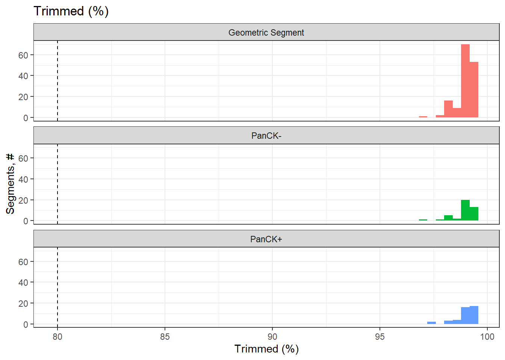
QC_histogram(sData(demoData), "Stitched (%)", col_by, 80)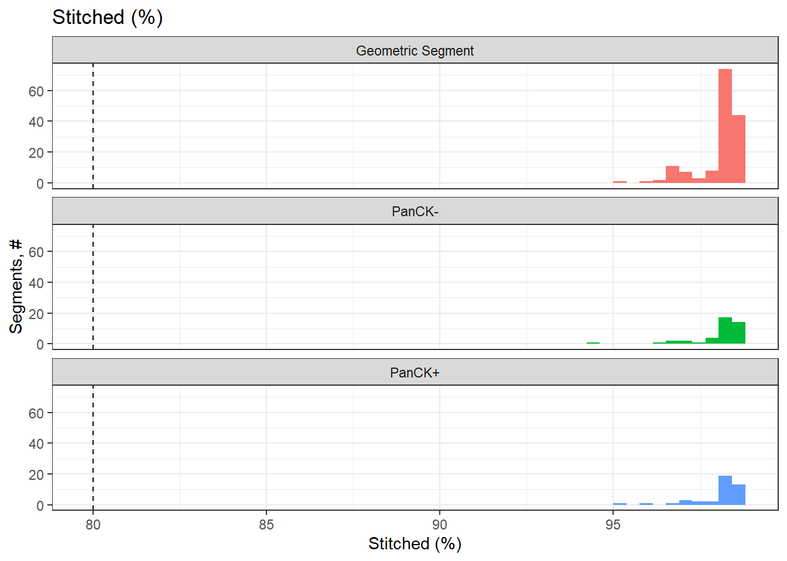
QC_histogram(sData(demoData), "Aligned (%)", col_by, 75)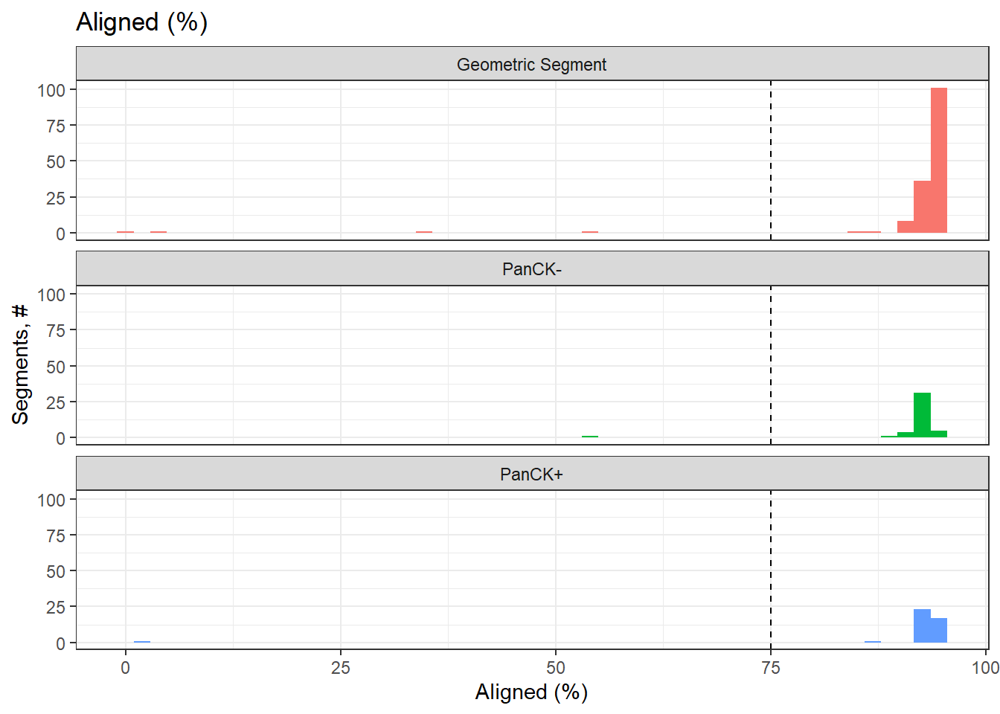
QC_histogram(sData(demoData), "Saturated (%)", col_by, 50) +
labs(title = "Sequencing Saturation (%)",
x = "Sequencing Saturation (%)")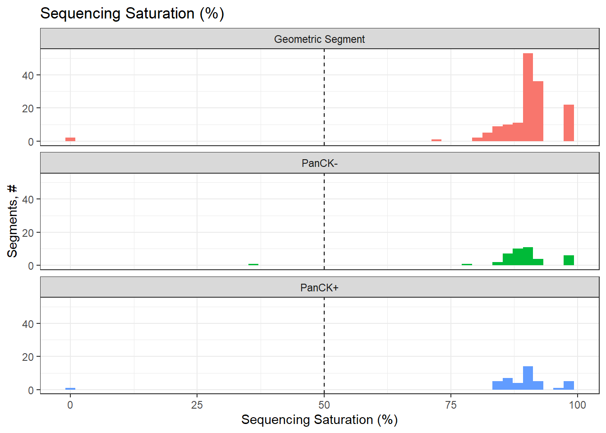
QC_histogram(sData(demoData), "area", col_by, 1000, scale_trans = "log10")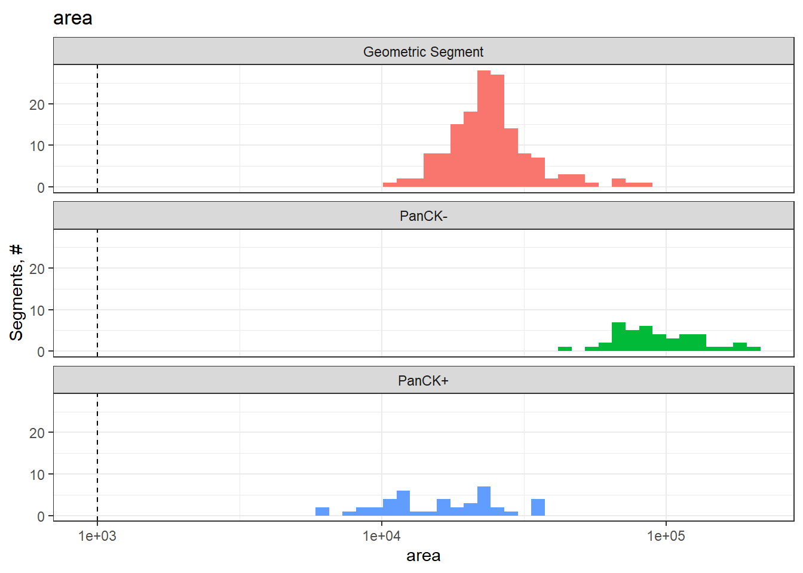
QC_histogram(sData(demoData), "nuclei", col_by, 20)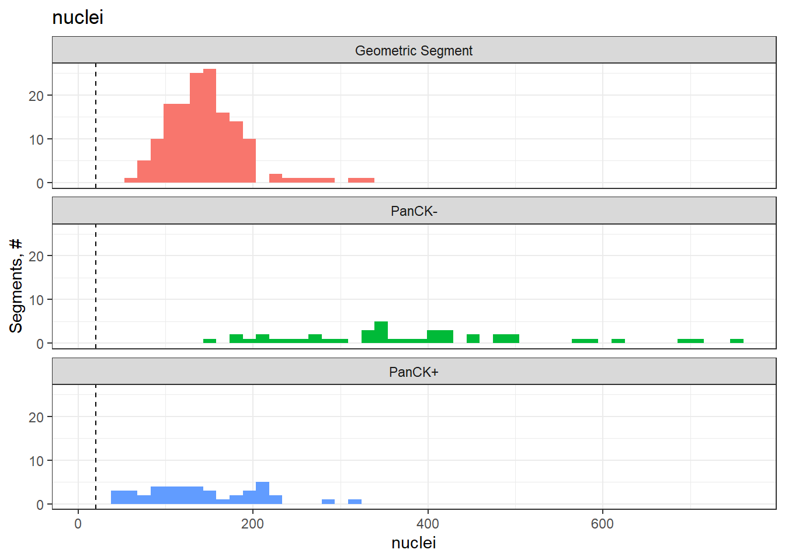
# calculate the negative geometric means for each module
negativeGeoMeans <-
esBy(negativeControlSubset(demoData),
GROUP = "Module",
FUN = function(x) {
assayDataApply(x, MARGIN = 2, FUN = ngeoMean, elt = "exprs")
})
protocolData(demoData)[["NegGeoMean"]] <- negativeGeoMeans
# explicitly copy the Negative geoMeans from sData to pData
negCols <- paste0("NegGeoMean_", modules)
pData(demoData)[, negCols] <- sData(demoData)[["NegGeoMean"]]
for(ann in negCols) {
plt <- QC_histogram(pData(demoData), ann, col_by, 2, scale_trans = "log10")
print(plt)
}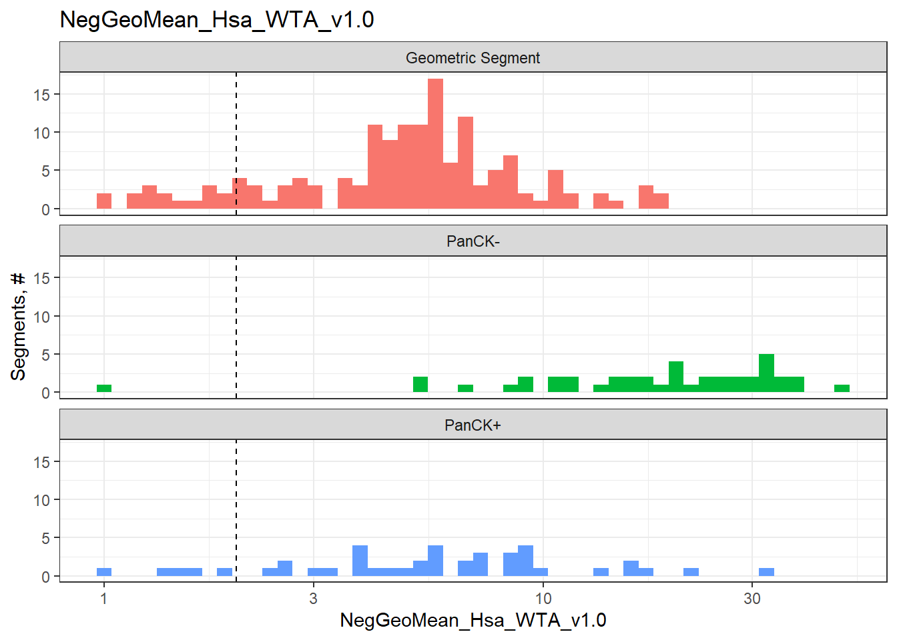
# calculate the negative geometric means for each module
negativeGeoMeans <-
esBy(negativeControlSubset(demoData),
GROUP = "Module",
FUN = function(x) {
assayDataApply(x, MARGIN = 2, FUN = ngeoMean, elt = "exprs")
})
protocolData(demoData)[["NegGeoMean"]] <- negativeGeoMeans
# explicitly copy the Negative geoMeans from sData to pData
negCols <- paste0("NegGeoMean_", modules)
pData(demoData)[, negCols] <- sData(demoData)[["NegGeoMean"]]
for(ann in negCols) {
plt <- QC_histogram(pData(demoData), ann, col_by, 2, scale_trans = "log10")
print(plt)
}
Finally we plot all of the QC Summary information in a table.
kable(QC_Summary, caption = "QC Summary Table for each Segment")| Pass | Warning | |
|---|---|---|
| LowReads | 231 | 4 |
| LowTrimmed | 235 | 0 |
| LowStitched | 235 | 0 |
| LowAligned | 229 | 6 |
| LowSaturation | 231 | 4 |
| LowNegatives | 235 | 0 |
| HighNTC | 235 | 0 |
| LowNuclei | 235 | 0 |
| LowArea | 235 | 0 |
| TOTAL FLAGS | 229 | 6 |
Remove flagged segments As the final step in Segment QC, we remove flagged segments that do not meet our QC cutoffs.
demoData <- demoData[, QCResults$QCStatus == "PASS"]
# Subsetting our dataset has removed samples which did not pass QC
dim(demoData)Features Samples
18642 229 Probe QC
Before we summarize our data into gene-level count data, we will remove low-performing probes. In short, this QC is an outlier removal process, whereby probes are either removed entirely from the study (global) or from specific segments (local). The QC applies to gene targets for which there are multiple distinct probes representing the count for a gene per segment. In WTA data, one specific probe exists per target gene; thus, Probe QC does not apply to the endogenous genes in the panel. Rather, it is performed on the negative control probes; there are multiple probes representing our negative controls, which do not target any sequence in the genome. These probes enable calculation of the background per segment and will be important for determining gene detection downstream.
After Probe QC, there will always remain at least one probe representing every gene target. In other words, Probe QC never removes genes from your data.
Set Probe QC Flags
A probe is removed globally from the dataset if either of the following is true:
the geometric mean of that probe’s counts from all segments divided by the geometric mean of all probe counts representing the target from all segments is less than 0.1
the probe is an outlier according to the Grubb’s test in at least 20% of the segments
A probe is removed locally (from a given segment) if the probe is an outlier according to the Grubb’s test in that segment.
We do not typically adjust these QC parameters.
# Generally keep the qcCutoffs parameters unchanged. Set removeLocalOutliers to
# FALSE if you do not want to remove local outliers
demoData <- setBioProbeQCFlags(demoData,
qcCutoffs = list(minProbeRatio = 0.1,
percentFailGrubbs = 20),
removeLocalOutliers = TRUE)
ProbeQCResults <- fData(demoData)[["QCFlags"]]
# Define QC table for Probe QC
qc_df <- data.frame(Passed = sum(rowSums(ProbeQCResults[, -1]) == 0),
Global = sum(ProbeQCResults$GlobalGrubbsOutlier),
Local = sum(rowSums(ProbeQCResults[, -2:-1]) > 0
& !ProbeQCResults$GlobalGrubbsOutlier))Exclude Outlier Probes
#Subset object to exclude all that did not pass Ratio & Global testing
ProbeQCPassed <-
subset(demoData,
fData(demoData)[["QCFlags"]][,c("LowProbeRatio")] == FALSE &
fData(demoData)[["QCFlags"]][,c("GlobalGrubbsOutlier")] == FALSE)
dim(ProbeQCPassed)Features Samples
18641 229 demoData <- ProbeQCPassed Create Gene-level Count Data
With our Probe QC steps complete, we will generate a gene-level count matrix. The count for any gene with multiple probes per segment is calculated as the geometric mean of those probes.
# Check how many unique targets the object has
length(unique(featureData(demoData)[["TargetName"]]))[1] 18504# collapse to targets
target_demoData <- aggregateCounts(demoData)
dim(target_demoData)Features Samples
18504 229 exprs(target_demoData)[1:5, 1:2] DSP-1001250007851-H-A02.dcc DSP-1001250007851-H-A03.dcc
A2M 485 262
NAT2 15 18
ACADM 31 15
ACADS 27 17
ACAT1 29 24Limit of Quantification
In addition to Segment and Probe QC, we also determine the limit of quantification (LOQ) per segment. The LOQ is calculated based on the distribution of negative control probes and is intended to approximate the quantifiable limit of gene expression per segment. Please note that this process is more stable in larger segments. Likewise, the LOQ may not be as accurately reflective of true signal detection rates in segments with low negative probe counts (ex: <2).
We typically use 2 geometric standard deviations (n=2) above the geometric mean as the LOQ, which is reasonable for most studies. We also recommend that a minimum LOQ of 2 be used if the LOQ calculated in a segment is below this threshold.
# Define LOQ SD threshold and minimum value
cutoff <- 2
minLOQ <- 2
# Calculate LOQ per module tested
LOQ <- data.frame(row.names = colnames(target_demoData))
for(module in modules) {
vars <- paste0(c("NegGeoMean_", "NegGeoSD_"),
module)
if(all(vars[1:2] %in% colnames(pData(target_demoData)))) {
LOQ[, module] <-
pmax(minLOQ,
pData(target_demoData)[, vars[1]] *
pData(target_demoData)[, vars[2]] ^ cutoff)
}
}
pData(target_demoData)$LOQ <- LOQFiltering
After determining the limit of quantification (LOQ) per segment, we recommend filtering out either segments and/or genes with abnormally low signal. Filtering is an important step to focus on the true biological data of interest.
We determine the number of genes detected in each segment across the dataset.
LOQ_Mat <- c()
for(module in modules) {
ind <- fData(target_demoData)$Module == module
Mat_i <- t(esApply(target_demoData[ind, ], MARGIN = 1,
FUN = function(x) {
x > LOQ[, module]
}))
LOQ_Mat <- rbind(LOQ_Mat, Mat_i)
}
# ensure ordering since this is stored outside of the geomxSet
LOQ_Mat <- LOQ_Mat[fData(target_demoData)$TargetName, ]Segment Gene Detection
We first filter out segments with exceptionally low signal. These segments will have a small fraction of panel genes detected above the LOQ relative to the other segments in the study. Let’s visualize the distribution of segments with respect to their % genes detected:
# Save detection rate information to pheno data
pData(target_demoData)$GenesDetected <-
colSums(LOQ_Mat, na.rm = TRUE)
pData(target_demoData)$GeneDetectionRate <-
pData(target_demoData)$GenesDetected / nrow(target_demoData)
# Determine detection thresholds: 1%, 5%, 10%, 15%, >15%
pData(target_demoData)$DetectionThreshold <-
cut(pData(target_demoData)$GeneDetectionRate,
breaks = c(0, 0.01, 0.05, 0.1, 0.15, 1),
labels = c("<1%", "1-5%", "5-10%", "10-15%", ">15%"))
# stacked bar plot of different cut points (1%, 5%, 10%, 15%)
ggplot(pData(target_demoData),
aes(x = DetectionThreshold)) +
geom_bar(aes(fill = region)) +
geom_text(stat = "count", aes(label = ..count..), vjust = -0.5) +
theme_bw() +
scale_y_continuous(expand = expansion(mult = c(0, 0.1))) +
labs(x = "Gene Detection Rate",
y = "Segments, #",
fill = "Segment Type")Warning: The dot-dot notation (`..count..`) was deprecated in ggplot2 3.4.0.
ℹ Please use `after_stat(count)` instead.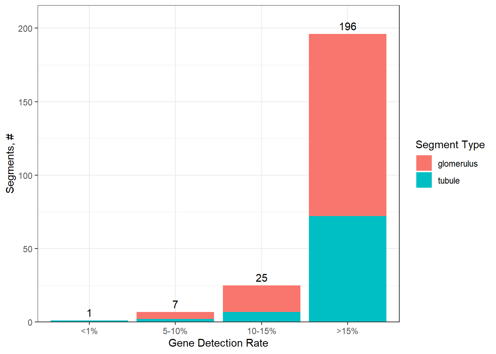
We can also create a table to review what kidney tissue type (DKD vs normal) is going to be impacted by each threshold:
# cut percent genes detected at 1, 5, 10, 15
kable(table(pData(target_demoData)$DetectionThreshold,
pData(target_demoData)$class))| DKD | normal | |
|---|---|---|
| <1% | 0 | 1 |
| 1-5% | 0 | 0 |
| 5-10% | 6 | 1 |
| 10-15% | 21 | 4 |
| >15% | 102 | 94 |
In this example, we choose to remove segments with less than 10% of the genes detected. Generally, 5-10% detection is a reasonable segment filtering threshold. However, based on the experimental design (e.g. segment types, size, nuclei) and tissue characteristics (e.g. type, age), these guidelines may require adjustment.
target_demoData <-
target_demoData[, pData(target_demoData)$GeneDetectionRate >= .1]
dim(target_demoData)Features Samples
18504 221 Gene Detection Rate
Next, we determine the detection rate for genes across the study. To illustrate this idea, we create a small gene list (goi) to review.
library(scales) # for percent
# Calculate detection rate:
LOQ_Mat <- LOQ_Mat[, colnames(target_demoData)]
fData(target_demoData)$DetectedSegments <- rowSums(LOQ_Mat, na.rm = TRUE)
fData(target_demoData)$DetectionRate <-
fData(target_demoData)$DetectedSegments / nrow(pData(target_demoData))
# Gene of interest detection table
goi <- c("PDCD1", "CD274", "IFNG", "CD8A", "CD68", "EPCAM",
"KRT18", "NPHS1", "NPHS2", "CALB1", "CLDN8")
goi_df <- data.frame(
Gene = goi,
Number = fData(target_demoData)[goi, "DetectedSegments"],
DetectionRate = percent(fData(target_demoData)[goi, "DetectionRate"]))Gene Filtering
We will graph the total number of genes detected in different percentages of segments. Based on the visualization below, we can better understand global gene detection in our study and select how many low detected genes to filter out of the dataset. Gene filtering increases performance of downstream statistical tests and improves interpretation of true biological signal.
# Plot detection rate:
plot_detect <- data.frame(Freq = c(1, 5, 10, 20, 30, 50))
plot_detect$Number <-
unlist(lapply(c(0.01, 0.05, 0.1, 0.2, 0.3, 0.5),
function(x) {sum(fData(target_demoData)$DetectionRate >= x)}))
plot_detect$Rate <- plot_detect$Number / nrow(fData(target_demoData))
rownames(plot_detect) <- plot_detect$Freq
ggplot(plot_detect, aes(x = as.factor(Freq), y = Rate, fill = Rate)) +
geom_bar(stat = "identity") +
geom_text(aes(label = formatC(Number, format = "d", big.mark = ",")),
vjust = 1.6, color = "black", size = 4) +
scale_fill_gradient2(low = "orange2", mid = "lightblue",
high = "dodgerblue3", midpoint = 0.65,
limits = c(0,1),
labels = scales::percent) +
theme_bw() +
scale_y_continuous(labels = scales::percent, limits = c(0,1),
expand = expansion(mult = c(0, 0))) +
labs(x = "% of Segments",
y = "Genes Detected, % of Panel > LOQ")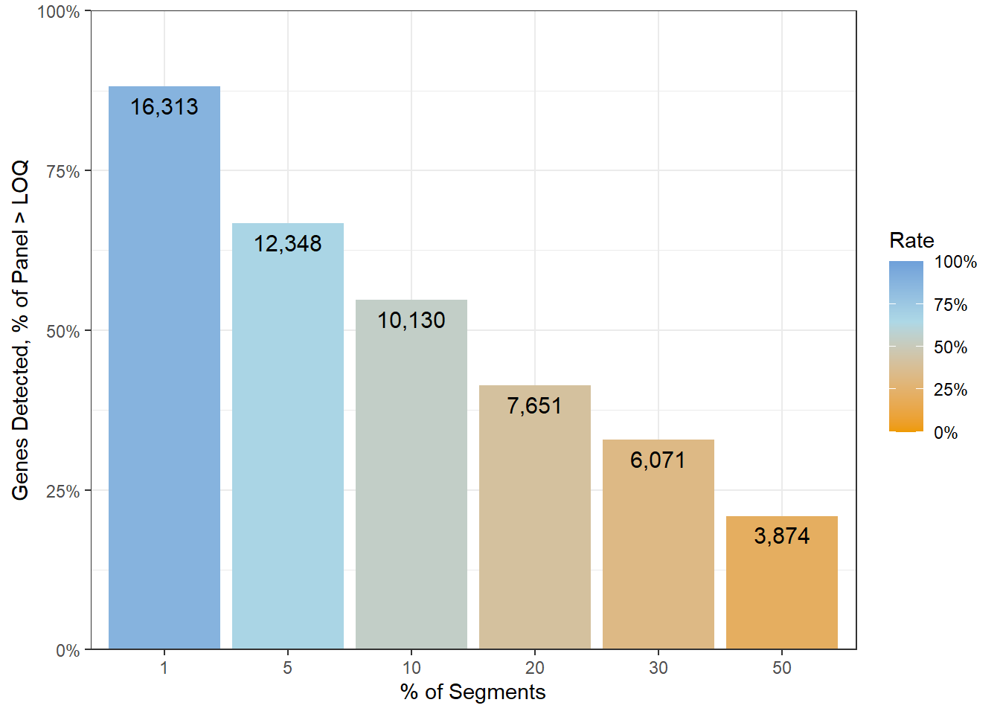
We typically set a % Segment cutoff ranging from 5-20% based on the biological diversity of our dataset. For this study, we will select 10% as our cutoff. In other words, we will focus on the genes detected in at least 10% of our segments; we filter out the remainder of the targets.
Note: if we know that a key gene is represented in only a small number of segments (<10%) due to biological diversity, we may select a different cutoff or keep the target gene by manually selecting it for inclusion in the data object.
# Subset to target genes detected in at least 10% of the samples.
# Also manually include the negative control probe, for downstream use
negativeProbefData <- subset(fData(target_demoData), CodeClass == "Negative")
neg_probes <- unique(negativeProbefData$TargetName)
target_demoData <-
target_demoData[fData(target_demoData)$DetectionRate >= 0.1 |
fData(target_demoData)$TargetName %in% neg_probes, ]
dim(target_demoData)Features Samples
10131 221 # retain only detected genes of interest
goi <- goi[goi %in% rownames(target_demoData)]Normalization
We will now normalize the GeoMx data for downstream visualizations and differential expression. The two common methods for normalization of DSP-NGS RNA data are i) quartile 3 (Q3) or ii) background normalization.
library(reshape2) # for melt
library(cowplot) # for plot_grid
# Graph Q3 value vs negGeoMean of Negatives
ann_of_interest <- "region"
Stat_data <-
data.frame(row.names = colnames(exprs(target_demoData)),
Segment = colnames(exprs(target_demoData)),
Annotation = pData(target_demoData)[, ann_of_interest],
Q3 = unlist(apply(exprs(target_demoData), 2,
quantile, 0.75, na.rm = TRUE)),
NegProbe = exprs(target_demoData)[neg_probes, ])
Stat_data_m <- melt(Stat_data, measure.vars = c("Q3", "NegProbe"),
variable.name = "Statistic", value.name = "Value")
plt1 <- ggplot(Stat_data_m,
aes(x = Value, fill = Statistic)) +
geom_histogram(bins = 40) + theme_bw() +
scale_x_continuous(trans = "log2") +
facet_wrap(~Annotation, nrow = 1) +
scale_fill_brewer(palette = 3, type = "qual") +
labs(x = "Counts", y = "Segments, #")
plt2 <- ggplot(Stat_data,
aes(x = NegProbe, y = Q3, color = Annotation)) +
geom_abline(intercept = 0, slope = 1, lty = "dashed", color = "darkgray") +
geom_point() + guides(color = "none") + theme_bw() +
scale_x_continuous(trans = "log2") +
scale_y_continuous(trans = "log2") +
theme(aspect.ratio = 1) +
labs(x = "Negative Probe GeoMean, Counts", y = "Q3 Value, Counts")
plt3 <- ggplot(Stat_data,
aes(x = NegProbe, y = Q3 / NegProbe, color = Annotation)) +
geom_hline(yintercept = 1, lty = "dashed", color = "darkgray") +
geom_point() + theme_bw() +
scale_x_continuous(trans = "log2") +
scale_y_continuous(trans = "log2") +
theme(aspect.ratio = 1) +
labs(x = "Negative Probe GeoMean, Counts", y = "Q3/NegProbe Value, Counts")
btm_row <- plot_grid(plt2, plt3, nrow = 1, labels = c("B", ""),
rel_widths = c(0.43,0.57))
plot_grid(plt1, btm_row, ncol = 1, labels = c("A", ""))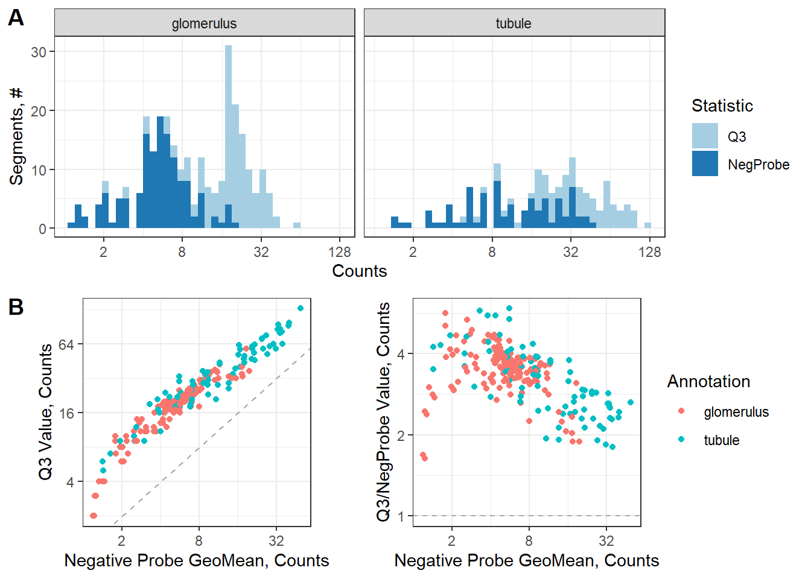
As expected, we see separation of the Q3 and negative probe counts at both the distribution (A) and per segment (B) levels.
Next, we normalize our data. We will use Q3 normalized data moving forward. We use the normalize function from NanoStringNCTools to create normalization factors reflecting each data type. Upper quartile (Q3) normalization is performed using norm_method = "quant" setting the desiredQuantile flag to 0.75. Other quantiles could be specified by changing that value. We save the normalized data to a specific slot using toELT = "q_norm". Similarly background normalization is performed by setting norm_method = "neg" and toElt = "neg_norm".
# Q3 norm (75th percentile) for WTA/CTA with or without custom spike-ins
target_demoData <- normalize(target_demoData ,
norm_method = "quant",
desiredQuantile = .75,
toElt = "q_norm")
# Background normalization for WTA/CTA without custom spike-in
target_demoData <- normalize(target_demoData ,
norm_method = "neg",
fromElt = "exprs",
toElt = "neg_norm")To demonstrate the effects of normalization, we graph representative box plots of the data for individual segments before and after normalization.
# visualize the first 10 segments with each normalization method
boxplot(exprs(target_demoData)[,1:10],
col = "#9EDAE5", main = "Raw Counts",
log = "y", names = 1:10, xlab = "Segment",
ylab = "Counts, Raw")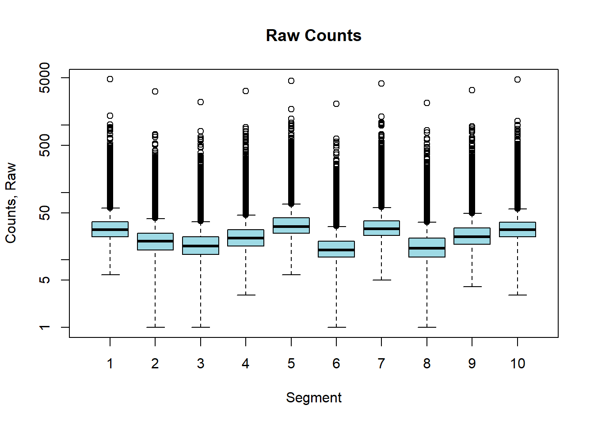
boxplot(assayDataElement(target_demoData[,1:10], elt = "q_norm"),
col = "#2CA02C", main = "Q3 Norm Counts",
log = "y", names = 1:10, xlab = "Segment",
ylab = "Counts, Q3 Normalized")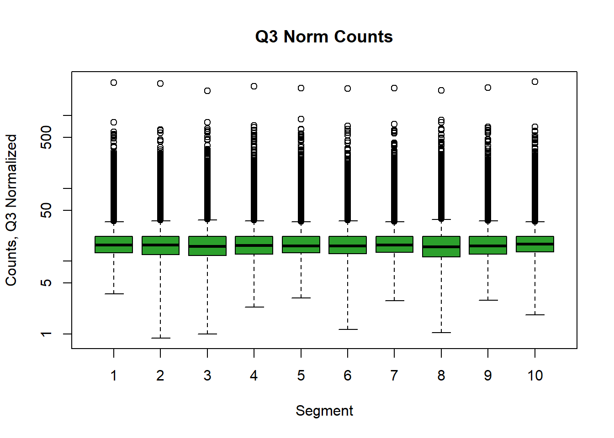
boxplot(assayDataElement(target_demoData[,1:10], elt = "neg_norm"),
col = "#FF7F0E", main = "Neg Norm Counts",
log = "y", names = 1:10, xlab = "Segment",
ylab = "Counts, Neg. Normalized")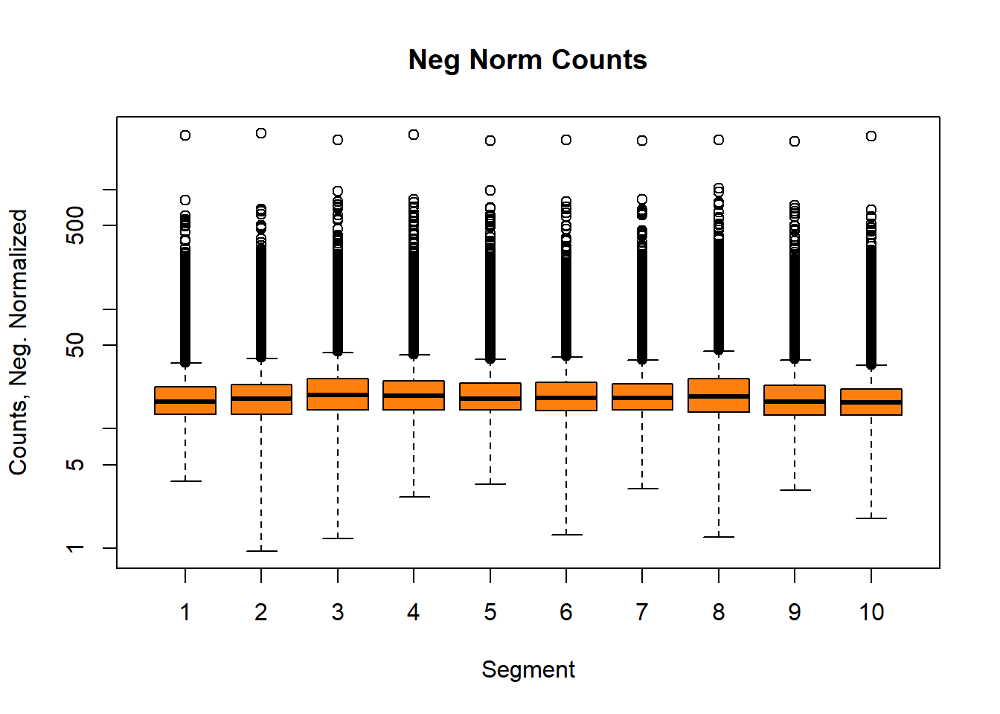
Unsupervised Analysis
UMAP & t-SNE
One common approach to understanding high-plex data is dimension reduction. Two common methods are UMAP and tSNE, which are non-orthogonally constrained projections that cluster samples based on overall gene expression. In this study, we see by either UMAP (from the umap package) or tSNE (from the Rtsne package), clusters of segments related to structure (glomeruli or tubules) and disease status (normal or diabetic kidney disease).
library(umap)Warning: package 'umap' was built under R version 4.2.2library(Rtsne)
# update defaults for umap to contain a stable random_state (seed)
custom_umap <- umap::umap.defaults
custom_umap$random_state <- 42
# run UMAP
umap_out <-
umap(t(log2(assayDataElement(target_demoData , elt = "q_norm"))),
config = custom_umap)
pData(target_demoData)[, c("UMAP1", "UMAP2")] <- umap_out$layout[, c(1,2)]
ggplot(pData(target_demoData),
aes(x = UMAP1, y = UMAP2, color = region, shape = class)) +
geom_point(size = 3) +
theme_bw()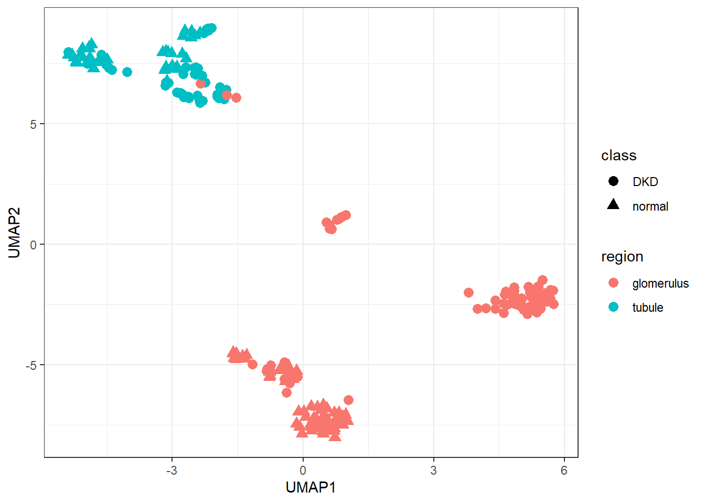
# run tSNE
set.seed(42) # set the seed for tSNE as well
tsne_out <-
Rtsne(t(log2(assayDataElement(target_demoData , elt = "q_norm"))),
perplexity = ncol(target_demoData)*.15)
pData(target_demoData)[, c("tSNE1", "tSNE2")] <- tsne_out$Y[, c(1,2)]
ggplot(pData(target_demoData),
aes(x = tSNE1, y = tSNE2, color = region, shape = class)) +
geom_point(size = 3) +
theme_bw()
Clustering high CV Genes
Another approach to explore the data is to calculate the coefficient of variation (CV) for each gene. We then identify genes with high CVs that should have large differences across the various profiled segments. This unbiased approach can reveal highly variable genes across the study.
We plot the results using unsupervised hierarchical clustering, displayed as a heatmap.
library(pheatmap) # for pheatmapWarning: package 'pheatmap' was built under R version 4.2.2# create a log2 transform of the data for analysis
assayDataElement(object = target_demoData, elt = "log_q") <-
assayDataApply(target_demoData, 2, FUN = log, base = 2, elt = "q_norm")
# create CV function
calc_CV <- function(x) {sd(x) / mean(x)}
CV_dat <- assayDataApply(target_demoData,
elt = "log_q", MARGIN = 1, calc_CV)
# show the highest CD genes and their CV values
sort(CV_dat, decreasing = TRUE)[1:5] CAMK2N1 AKR1C1 AQP2 GDF15 REN
0.5886006 0.5114973 0.4607206 0.4196469 0.4193216 # Identify genes in the top 3rd of the CV values
GOI <- names(CV_dat)[CV_dat > quantile(CV_dat, 0.8)]
pheatmap(assayDataElement(target_demoData[GOI, ], elt = "log_q"),
scale = "row",
show_rownames = FALSE, show_colnames = FALSE,
border_color = NA,
clustering_method = "average",
clustering_distance_rows = "correlation",
clustering_distance_cols = "correlation",
breaks = seq(-3, 3, 0.05),
color = colorRampPalette(c("purple3", "black", "yellow2"))(120),
annotation_col =
pData(target_demoData)[, c("class", "segment", "region")])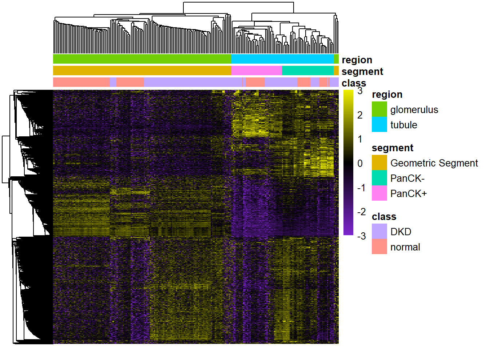
Differential Expression
Within Slide Analysis: Glomeruli vs Tubules
One informative exploration is to study differences between morphological structures. In this example, we can study differential expression between glomeruli and tubules. We will focus on the diseased kidney tissues. Because we are comparing structures that co-exist within the a given tissue we will use the LMM model with a random slope. Morphological structure (Region) is our test variable. We control for tissue subsampling with slide name using a random slope and intercept; the intercept adjusts for the multiple regions placed per unique tissue, since we have one tissue per slide. If multiple tissues are placed per slide, we would change the intercept variable to the unique tissue name (ex: tissue name, Block ID, etc).
In this analysis we save log2 fold change estimates and P-values across all levels in the factor of interest. We also apply a Benjamini-Hochberg multiple test correction.
# convert test variables to factors
pData(target_demoData)$testRegion <-
factor(pData(target_demoData)$region, c("glomerulus", "tubule"))
pData(target_demoData)[["slide"]] <-
factor(pData(target_demoData)[["slide name"]])
assayDataElement(object = target_demoData, elt = "log_q") <-
assayDataApply(target_demoData, 2, FUN = log, base = 2, elt = "q_norm")
# run LMM:
# formula follows conventions defined by the lme4 package
results <- c()
for(status in c("DKD", "normal")) {
ind <- pData(target_demoData)$class == status
mixedOutmc <-
mixedModelDE(target_demoData[, ind],
elt = "log_q",
modelFormula = ~ testRegion + (1 + testRegion | slide),
groupVar = "testRegion",
nCores = parallel::detectCores(),
multiCore = FALSE)
# format results as data.frame
r_test <- do.call(rbind, mixedOutmc["lsmeans", ])
tests <- rownames(r_test)
r_test <- as.data.frame(r_test)
r_test$Contrast <- tests
# use lapply in case you have multiple levels of your test factor to
# correctly associate gene name with it's row in the results table
r_test$Gene <-
unlist(lapply(colnames(mixedOutmc),
rep, nrow(mixedOutmc["lsmeans", ][[1]])))
r_test$Subset <- status
r_test$FDR <- p.adjust(r_test$`Pr(>|t|)`, method = "fdr")
r_test <- r_test[, c("Gene", "Subset", "Contrast", "Estimate",
"Pr(>|t|)", "FDR")]
results <- rbind(results, r_test)
}Interpreting the results table
Let’s review the results from the analysis of glomeruli to tubules in healthy (normal) patients. We saved the LMM outputs into a table (results) containing three of the key features for differential expression: the log2 fold change value (Estimate), P-value (Pr(>|t|)), and false-discovery adjusted P-values (FDR). Let’s take a look at a few genes of interest. The contrast column is used to interpret the log2 fold change value as it specifies which levels are compared (e.g. positive fold change values when comparing glomerulus - tubule indicates an enrichment in the glomerulus; negative indicates enrichment in tubules).
We can display these results by subsetting the results table.
kable(subset(results, Gene %in% goi & Subset == "normal"), digits = 3,
caption = "DE results for Genes of Interest",
align = "lc", row.names = FALSE)| Gene | Subset | Contrast | Estimate | Pr(>|t|) | FDR |
|---|---|---|---|---|---|
| KRT18 | normal | glomerulus - tubule | -1.169 | 0.076 | 0.237 |
| CD68 | normal | glomerulus - tubule | -0.153 | 0.289 | 0.483 |
| CD8A | normal | glomerulus - tubule | -0.227 | 0.147 | 0.332 |
| NPHS1 | normal | glomerulus - tubule | 3.809 | 0.001 | 0.012 |
| CALB1 | normal | glomerulus - tubule | -2.014 | 0.027 | 0.138 |
| CD274 | normal | glomerulus - tubule | 0.223 | 0.031 | 0.147 |
| NPHS2 | normal | glomerulus - tubule | 5.430 | 0.002 | 0.025 |
| CLDN8 | normal | glomerulus - tubule | -1.961 | 0.001 | 0.011 |
| EPCAM | normal | glomerulus - tubule | -2.297 | 0.000 | 0.006 |
Between Slide Analysis: Diabetic Kidney Disease vs Healthy
Another informative exploration is to compare tissue cohorts. In this case, we would like to compare diseased versus healthy kidneys. We will focus on glomeruli as our structure. Because we are comparing disease status, which is specific to the entire kidney, we will use the LMM model without a random slope. Disease (testClass) is our test variable. Like our previous LMM example, we control for tissue subsampling with slide name as the intercept.
# convert test variables to factors
pData(target_demoData)$testClass <-
factor(pData(target_demoData)$class, c("normal", "DKD"))
# run LMM:
# formula follows conventions defined by the lme4 package
results2 <- c()
for(region in c("glomerulus", "tubule")) {
ind <- pData(target_demoData)$region == region
mixedOutmc <-
mixedModelDE(target_demoData[, ind],
elt = "log_q",
modelFormula = ~ testClass + (1 | slide),
groupVar = "testClass",
nCores = parallel::detectCores(),
multiCore = FALSE)
# format results as data.frame
r_test <- do.call(rbind, mixedOutmc["lsmeans", ])
tests <- rownames(r_test)
r_test <- as.data.frame(r_test)
r_test$Contrast <- tests
# use lapply in case you have multiple levels of your test factor to
# correctly associate gene name with it's row in the results table
r_test$Gene <-
unlist(lapply(colnames(mixedOutmc),
rep, nrow(mixedOutmc["lsmeans", ][[1]])))
r_test$Subset <- region
r_test$FDR <- p.adjust(r_test$`Pr(>|t|)`, method = "fdr")
r_test <- r_test[, c("Gene", "Subset", "Contrast", "Estimate",
"Pr(>|t|)", "FDR")]
results2 <- rbind(results2, r_test)
}We can review our genes of interest for this comparison as well. Let’s focus on results from analysis of tubules.
kable(subset(results2, Gene %in% goi & Subset == "tubule"), digits = 3,
caption = "DE results for Genes of Interest",
align = "lc", row.names = FALSE)| Gene | Subset | Contrast | Estimate | Pr(>|t|) | FDR |
|---|---|---|---|---|---|
| KRT18 | tubule | normal - DKD | -0.096 | 0.748 | 0.997 |
| CD68 | tubule | normal - DKD | -0.726 | 0.124 | 0.965 |
| CD8A | tubule | normal - DKD | -0.057 | 0.826 | 0.998 |
| NPHS1 | tubule | normal - DKD | -0.131 | 0.624 | 0.997 |
| CALB1 | tubule | normal - DKD | 1.408 | 0.013 | 0.652 |
| CD274 | tubule | normal - DKD | -0.252 | 0.522 | 0.997 |
| NPHS2 | tubule | normal - DKD | -0.128 | 0.730 | 0.997 |
| CLDN8 | tubule | normal - DKD | 0.979 | 0.000 | 0.058 |
| EPCAM | tubule | normal - DKD | 0.339 | 0.382 | 0.997 |
Visualizing DE Genes
Volcano Plots
A canonical visualization for interpreting differential gene expression results is the volcano plot. Let’s look at the LMM results from our diseased glomeruli versus tubules comparison.
library(ggrepel) Warning: package 'ggrepel' was built under R version 4.2.2# Categorize Results based on P-value & FDR for plotting
results$Color <- "NS or FC < 0.5"
results$Color[results$`Pr(>|t|)` < 0.05] <- "P < 0.05"
results$Color[results$FDR < 0.05] <- "FDR < 0.05"
results$Color[results$FDR < 0.001] <- "FDR < 0.001"
results$Color[abs(results$Estimate) < 0.5] <- "NS or FC < 0.5"
results$Color <- factor(results$Color,
levels = c("NS or FC < 0.5", "P < 0.05",
"FDR < 0.05", "FDR < 0.001"))
# pick top genes for either side of volcano to label
# order genes for convenience:
results$invert_P <- (-log10(results$`Pr(>|t|)`)) * sign(results$Estimate)
top_g <- c()
for(cond in c("DKD", "normal")) {
ind <- results$Subset == cond
top_g <- c(top_g,
results[ind, 'Gene'][
order(results[ind, 'invert_P'], decreasing = TRUE)[1:15]],
results[ind, 'Gene'][
order(results[ind, 'invert_P'], decreasing = FALSE)[1:15]])
}
top_g <- unique(top_g)
results <- results[, -1*ncol(results)] # remove invert_P from matrix
# Graph results
ggplot(results,
aes(x = Estimate, y = -log10(`Pr(>|t|)`),
color = Color, label = Gene)) +
geom_vline(xintercept = c(0.5, -0.5), lty = "dashed") +
geom_hline(yintercept = -log10(0.05), lty = "dashed") +
geom_point() +
labs(x = "Enriched in Tubules <- log2(FC) -> Enriched in Glomeruli",
y = "Significance, -log10(P)",
color = "Significance") +
scale_color_manual(values = c(`FDR < 0.001` = "dodgerblue",
`FDR < 0.05` = "lightblue",
`P < 0.05` = "orange2",
`NS or FC < 0.5` = "gray"),
guide = guide_legend(override.aes = list(size = 4))) +
scale_y_continuous(expand = expansion(mult = c(0,0.05))) +
geom_text_repel(data = subset(results, Gene %in% top_g & FDR < 0.001),
size = 2, point.padding = 0.15, color = "black",
min.segment.length = .1, box.padding = .2, lwd = 2,
max.overlaps = 50) +
theme_bw(base_size = 16) +
theme(legend.position = "bottom") +
facet_wrap(~Subset, scales = "free_y")Warning: Duplicated aesthetics after name standardisation: size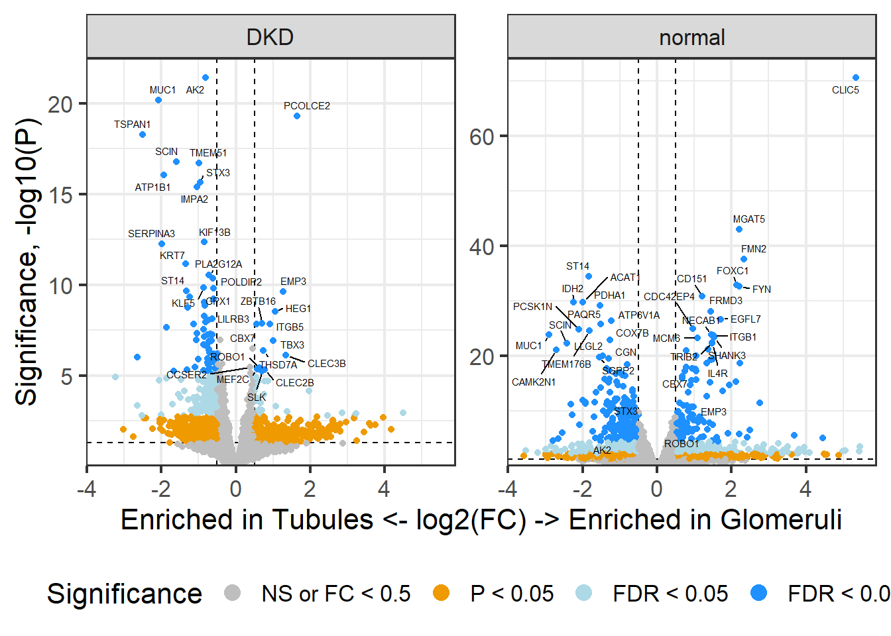
The volcano plot shows several genes that are significantly differentially expressed between glomeruli and tubules, though some are specific to the disease status of the sample. Note that because we use the linear mixed effect model to account for tissue specific variation, the volcano plot shape may look less typical than one generated with a linear regression model. There are some genes for which we see high fold change, but lower significance, because these genes appear to be behaving in a sample-specific manner rather than consistently across all kidney samples.
MA Plot
Another visualization for differential expression is an MA plot. With this plot, we look for differences relative to expression within the baseline feature. As we have filtered out genes with low expression, the MA plot will not exhibit a traditional shape, but it can be useful in identifying targets with relatively high fold change and baseline expression. In the plot below we keep the labeled genes within the top 90th percentile of expression on average with an FDR of < 0.001 and a log2 FC > 0.5.
results$MeanExp <-
rowMeans(assayDataElement(target_demoData,
elt = "q_norm"))
top_g2 <- results$Gene[results$Gene %in% top_g &
results$FDR < 0.001 &
abs(results$Estimate) > .5 &
results$MeanExp > quantile(results$MeanExp, 0.9)]
ggplot(subset(results, !Gene %in% neg_probes),
aes(x = MeanExp, y = Estimate,
size = -log10(`Pr(>|t|)`),
color = Color, label = Gene)) +
geom_hline(yintercept = c(0.5, -0.5), lty = "dashed") +
scale_x_continuous(trans = "log2") +
geom_point(alpha = 0.5) +
labs(y = "Enriched in Glomeruli <- log2(FC) -> Enriched in Tubules",
x = "Mean Expression",
color = "Significance") +
scale_color_manual(values = c(`FDR < 0.001` = "dodgerblue",
`FDR < 0.05` = "lightblue",
`P < 0.05` = "orange2",
`NS or FC < 0.5` = "gray")) +
geom_text_repel(data = subset(results, Gene %in% top_g2),
size = 4, point.padding = 0.15, color = "black",
min.segment.length = .1, box.padding = .2, lwd = 2) +
theme_bw(base_size = 16) +
facet_wrap(~Subset, nrow = 2, ncol = 1)Warning: Duplicated aesthetics after name standardisation: sizeWarning: ggrepel: 5 unlabeled data points (too many overlaps). Consider
increasing max.overlapsWarning: ggrepel: 2 unlabeled data points (too many overlaps). Consider
increasing max.overlaps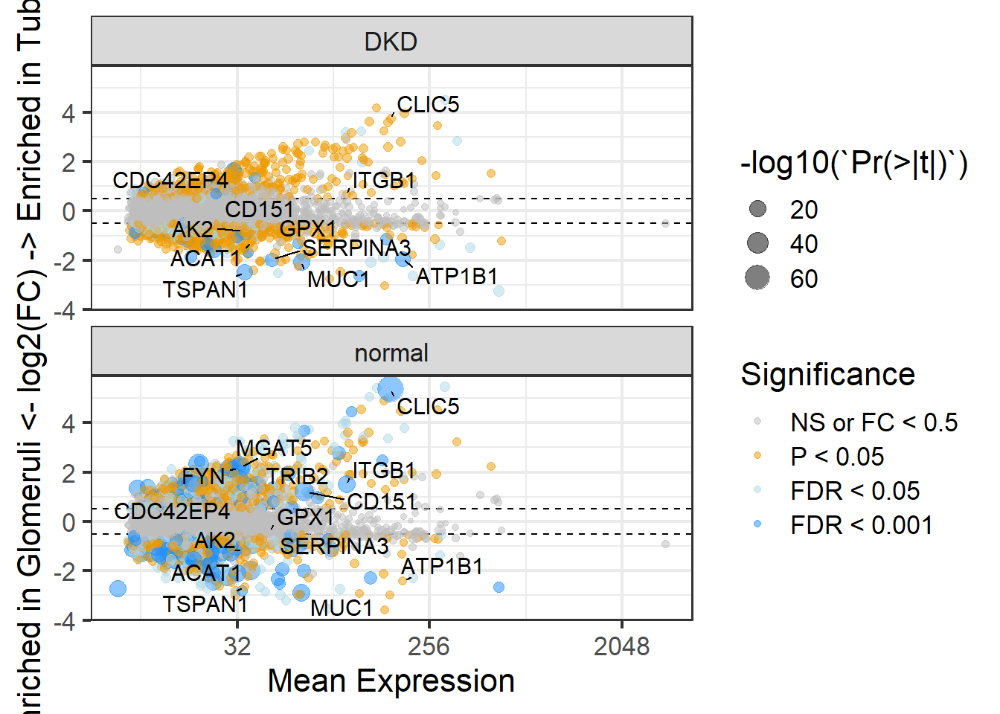
Plotting Genes of Interest
A simple and effective plot to view individual genes is the violin plot. This visualization reveals both the dynamic range and shape of the distribution for a gene target. We selected a few genes for which we validated structure-specific expression from the Human Protein Atlas. We will plot a gene enriched within the glomeruli, ITGB1 and a gene enriched within tubules, PDHA1.
First let’s review the model results for these targets:
kable(subset(results, Gene %in% c('PDHA1','ITGB1')), row.names = FALSE)| Gene | Subset | Contrast | Estimate | Pr(>|t|) | FDR | Color | MeanExp |
|---|---|---|---|---|---|---|---|
| PDHA1 | DKD | glomerulus - tubule | -1.0657650 | 0.0065159 | 0.1122655 | P < 0.05 | 24.82625 |
| ITGB1 | DKD | glomerulus - tubule | 0.6769474 | 0.0307688 | 0.2192658 | P < 0.05 | 104.30101 |
| PDHA1 | normal | glomerulus - tubule | -1.5416314 | 0.0000000 | 0.0000000 | FDR < 0.001 | 24.82625 |
| ITGB1 | normal | glomerulus - tubule | 1.5042831 | 0.0000000 | 0.0000000 | FDR < 0.001 | 104.30101 |
Here we see that while these genes are significantly enriched in a structure, the structure-specific expression is also specific to the healthy tissue.
Heatmap of Significant Genes
In addition to generating individual gene box plots or volcano plots, we can again create a heatmap from our data. This time rather than utilizing CV to select genes, we can use the P-value or FDR values to select genes. Here, we plot all genes with an FDR < 0.001.
# select top significant genes based on significance, plot with pheatmap
GOI <- unique(subset(results, `FDR` < 0.001)$Gene)
pheatmap(log2(assayDataElement(target_demoData[GOI, ], elt = "q_norm")),
scale = "row",
show_rownames = FALSE, show_colnames = FALSE,
border_color = NA,
clustering_method = "average",
clustering_distance_rows = "correlation",
clustering_distance_cols = "correlation",
cutree_cols = 2, cutree_rows = 2,
breaks = seq(-3, 3, 0.05),
color = colorRampPalette(c("purple3", "black", "yellow2"))(120),
annotation_col = pData(target_demoData)[, c("region", "class")])